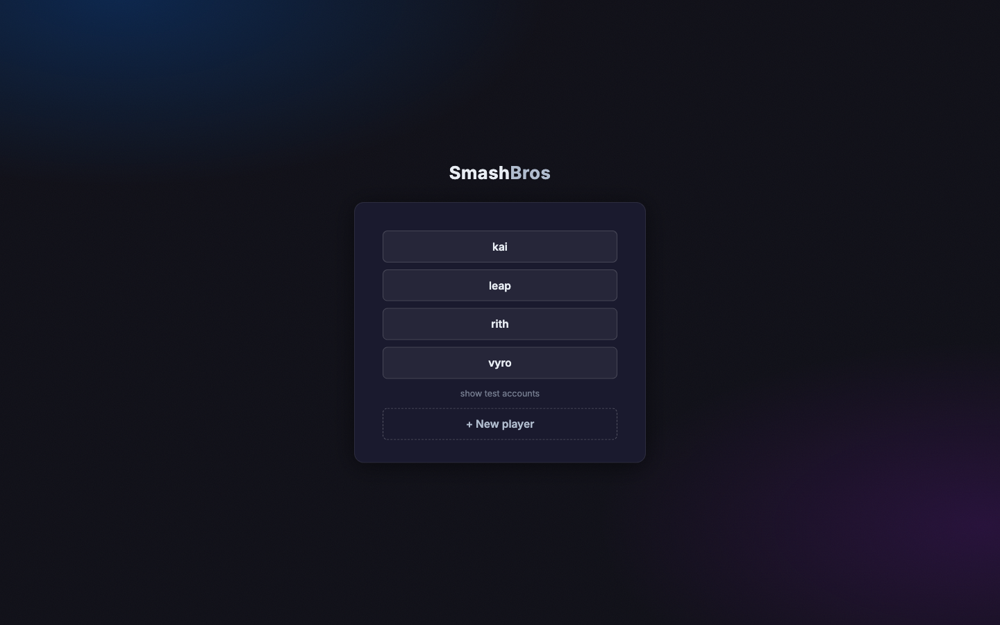
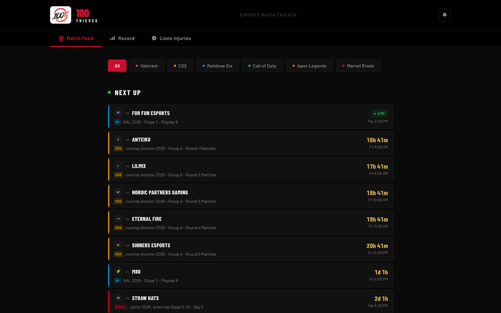

Michael Wei builds for people, then checks the data
Hi, I'm Michael. I build software for the people who actually have to use it.
I'm an Information Science student at Michigan State University. Right now I'm a Software Development Intern at TCR, the lead developer on a Digital SAT practice platform built for a real test-prep center, and a researcher studying how people talk to AI when they're stressed.
My first real job had nothing to do with code. From 2021 to 2025 I was an instructor at Kumon in Ann Arbor, helping rooms of 10 to 25 kids through math and reading worksheets. Four years of that teaches you one thing very well: if someone is stuck, it's usually because of how the problem was explained, not because of them.
I carried that into software. I study Information Science in MSU's College of Communication Arts and Sciences, which means I learn technology from the people side first. I like the kind of projects where there is someone on the other end with a job to do: an instructor who needs to see where a student is struggling, a tenant trying to understand a lease, or a group of friends who just want to know who's actually the best at Smash.
I also split my time with research, and I think it makes me a better developer. Reading interview transcripts for hours is slow work, but it's the fastest way I know to find out what people really mean, which is rarely what they say first. I've worked in labs on medical imaging AI, on how students in India and the United States connect entertainment media and mental health, and on whether young adults talk about stress differently with a person than with a chatbot.
My outlook on this career is simple: the code is the easy part. The hard part is figuring out what the person needs and then being honest about whether what you built actually does it. That's why I care about testing things against real data instead of just shipping a demo.
Quick facts
Based in
East Lansing, Michigan (originally from Ann Arbor)
Studying
Information Science at Michigan State University, class of 2027
Languages
English and conversational Chinese
Off the clock
Watching 100 Thieves matches, Smash Bros with friends, robotics side projects, and reading
Education
Michigan State University, East Lansing, Michigan
B.S. Information Science, College of Communication Arts and Sciences — started , expected
Community High School, Ann Arbor, Michigan
Graduated
Honors
Greenburg Center Scholarship,
Projects
Three things I've built. Each one started with a specific person or group who needed it.
Digital SAT Practice Platform
A mock Digital SAT that looks and behaves like the real exam, built for Triumph Training Center, a Michigan test-prep center. Students take full practice tests, and instructors get analytics showing where each student is losing points.
My role
Lead developer on a three-person team through the Claude AI Club at MSU
Timeline
to present
Built with
Python, Flask, HTML, CSS, JavaScript, Supabase PostgreSQL for the database, backend and frontend both deployed on Render
What it does
Adapts like the real test: everyone gets the same first module, then the backend grades it and routes the student to a harder or easier second module.
Scores tests on the 200 to 800 scale using item response theory, so a score reflects which questions you got right and not only how many.
Gives students, instructors, and parents different views through role-based access control.
What I learned
It's hard to work virtually with a group of people when not everyone has the same goal.
Keeping the adaptive rules in plain Python, separate from the database, made them easy to test and easy to explain to the client.
Having a real client changes everything. "Done" means the instructor can use it on Monday, not that it works on my laptop.
A for-fun project to play one-v-one tournaments with friends. It runs brackets and live character drafts, and keeps a rating for every player and every character they play.

The current login screen, where everyone in our group picks their profile before a game night.
My role
Solo developer
Timeline
to present, more than 300 commits so far
Built with
Python, FastAPI, SQLAlchemy, PostgreSQL on Supabase, Next.js, React, WebSockets
What I learned
It takes way more code and time to get something to look and work like I envision it.
I rewrote all 14 pages of the original plain HTML and JavaScript frontend in React, checking each new page side by side with the old one. Slow, but nothing broke for the people using it.
Live features like the draft room need WebSockets, and they fail in more interesting ways than a normal page load.
100 Thieves is my favorite esports organization, and following all of their teams meant checking a different site for each game. So I built one page that tracks every roster: Call of Duty, Counter-Strike, Marvel Rivals, Rainbow Six, and Valorant.

The match feed, filterable by game, with a live match and a countdown to everything coming up next.
My role
Solo developer
Timeline
to present
Built with
JavaScript, HTML, CSS, serverless functions on Vercel, Cheerio for scraping
What it does
Shows a single match feed with results, upcoming matches, and each team's record.
Opens a preview for any match with both rosters side by side.
Sends browser notifications 30, 10, and 5 minutes before a match and again when it goes live.
What I learned
When your data comes from scraping someone else's site, you don't control your most important dependency. I had to build every request to expect failure.
One rate-limited request used to take down the whole page. Switching to Promise.allSettled means one team's data can fail while the rest still load.
Conversational chatbot: a speech-based AI chatbot that listens to your voice and answers out loud.
First-person shooter: a zombie survival game where you collect ammo, reload at the right moment, and hold out against waves that keep getting harder.
Battleship: a two-player version with a live board that marks hits, misses, and sunk ships as you play.
Experience
Work and research experience, most recent first
Role
Where
When
What I did
Software Development Intern
Technical Consulting & Research, Inc. (remote)
to present
Build prototype web apps for access control, single sign-on, and role-based user management, and present progress weekly to the CEO and head of engineering.
Software Developer
Claude AI Club, Michigan State University
to present
Lead full-stack development of the Digital SAT practice platform for Triumph Training Center.
Researcher
Marple Lab, Michigan State University
to present
Clean and analyze interview transcripts from students in India and the United States on entertainment media and mental health. Co-author on a forthcoming article.
Researcher
Campos-Castillo Lab, Michigan State University
to
Helped run lab sessions and analyze transcripts comparing how young adults talk about stress with a person versus an AI chatbot.
Research Assistant
CAD-AI Research Lab, University of Michigan
to
Cleaned imaging datasets with pandas and worked on the backend of a browser-based tool for radiomic analysis in cancer research.
Data and Finance Intern
College of Human Medicine, Michigan State University
to
Tracked more than $8,000 in student research funding and automated survey reporting with Python and the Qualtrics API.
Instructor
Kumon, Ann Arbor
to
Helped groups of 10 to 25 students with math and reading.
Qualitative transcript analysis, thematic coding, data cleaning with pandas
Certificate
Introduction to Artificial Intelligence, IBM on Coursera (2025)
Contact
I'm open to software and research roles, and I'm always happy to talk about a project, a paper, or last night's match. Email is the fastest way to reach me.